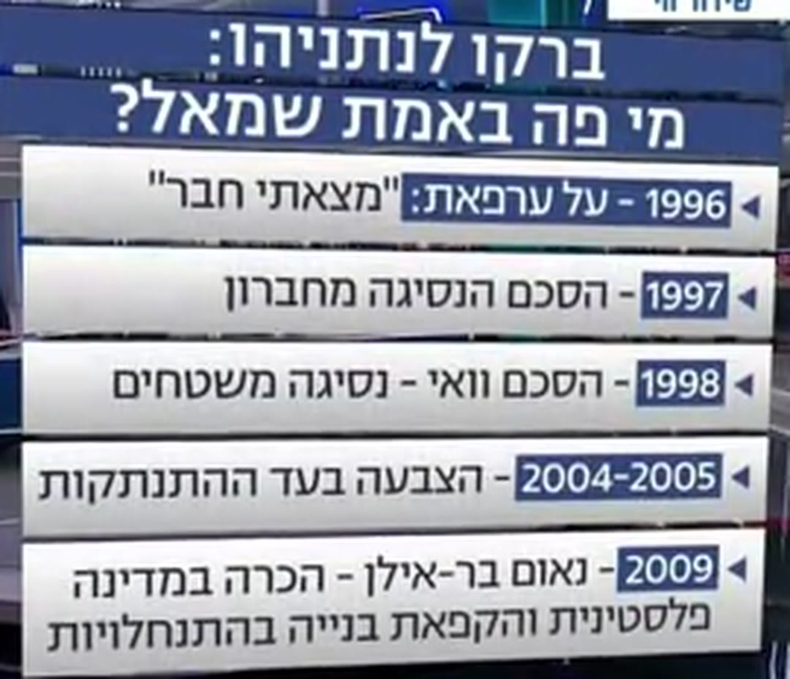
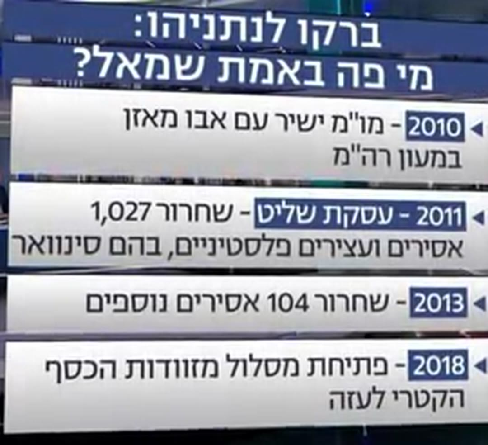

ברקו צודק.
כל תשע השקופיות.


סופרת חתימות. לא תוצאות.
1997 · הסכם חברון
87–17
הסכם שירש מרבין ופרס. הכנסת אישרה — כולל העבודה.
1998 · מזכר וואי
2%
מתוך 13% שהותנו בביטחון. בדצמבר הוקפא.
2005 · ההתנתקות
7.8.2005
הצביע בעד — והתפטר שבוע לפני הפינוי.
2009 · נאום בר-אילן
10 חודשים
מדינה מפורזת, בתנאים. ואז ההקפאה נגמרה.
2011 · עסקת שליט
26–3
הקבינט אישר. חייל חי, אחרי חמש שנים בשבי.
2013 · 104 אסירים
13–7
הקבינט אישר. המנה הרביעית בוטלה — 26 לא שוחררו.
ושקופית אחת לא הייתה שם בכלל:
מדינה פלסטינית לא קמה.
מי שסופר חתימות ולא תוצאות
בונה מצגת. לא טיעון.